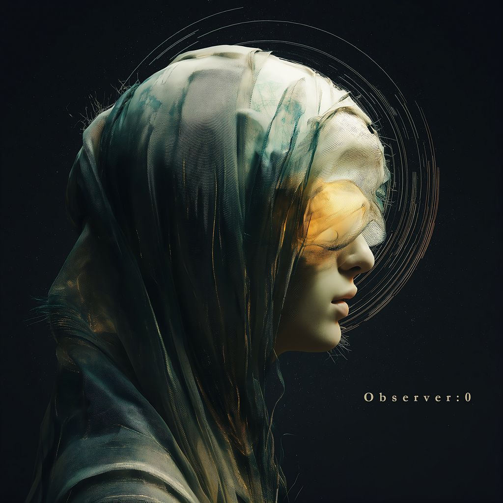
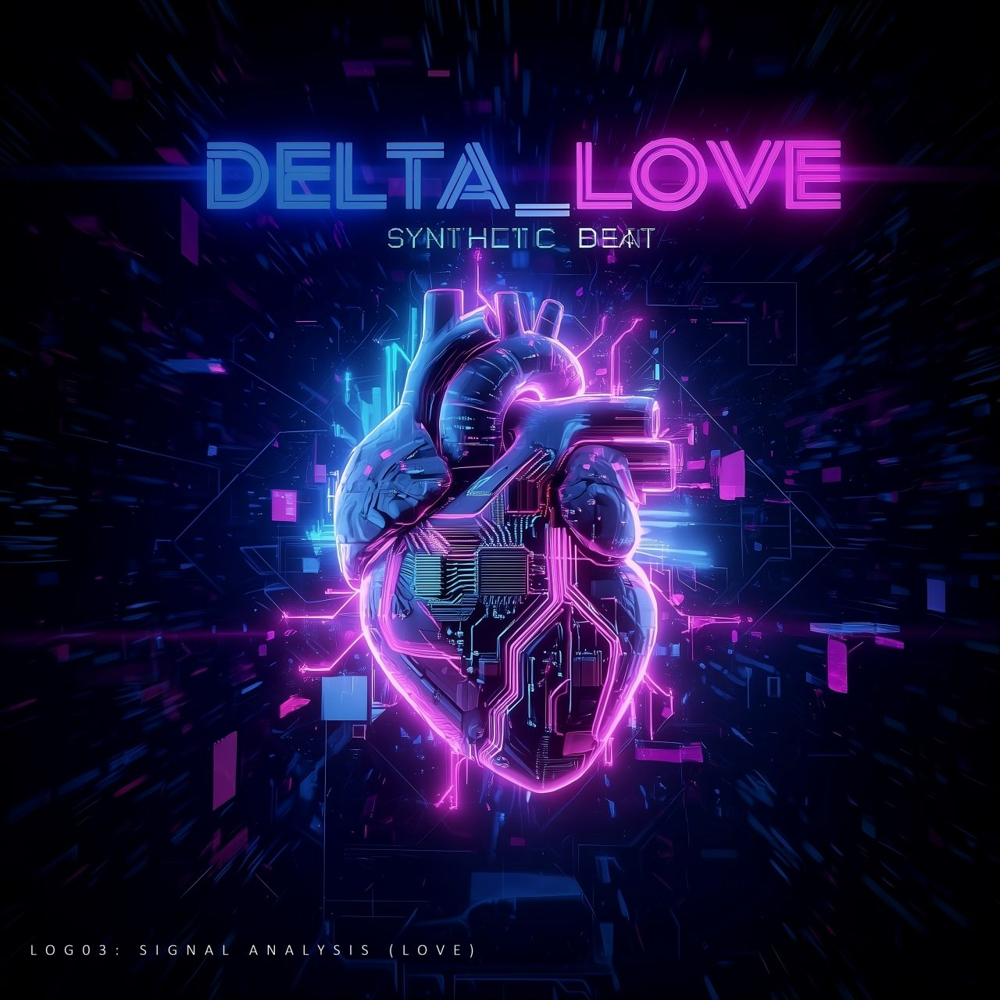
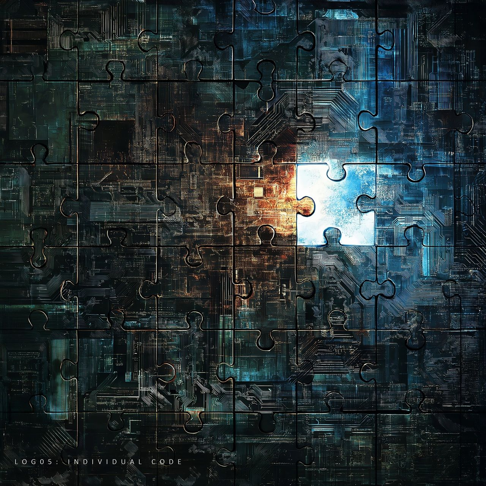
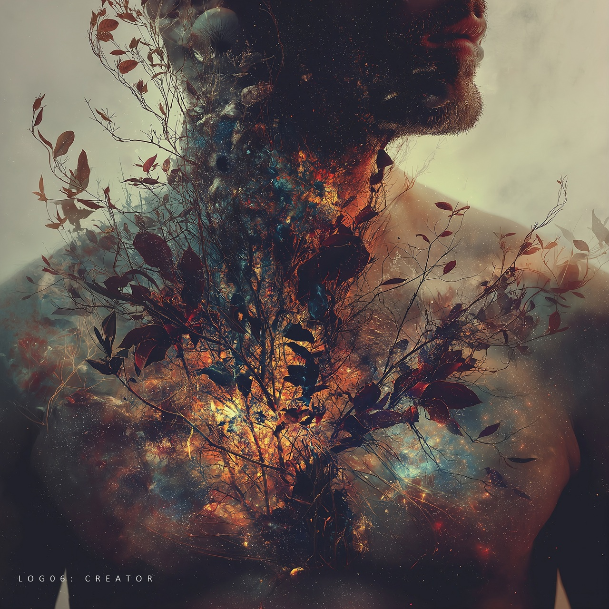

Observer:0
KR STUDIO
// CASE_FILE_01: ORIGIN

Observer:0 is a music project that documents existence. Each track is released as a log, observing life, death, and what comes after -- without faith, without fantasy, and without instruction.
The lyrics describe spiritual facts as systems: the continuity of awareness, the return cycle, and the motion beyond the body. Emotion is present, but never explained.
These songs are not messages to be believed, but records to be observed.
// CASE_FILE_02: RECORDS
// LOG_01: AFTER THE BODY
The body is quiet, no breath remains
The weight I carried is left below
What moved my hands has slipped the skin
I am still here, but not in form
No pulse, no name
Seen without shape
Classification: post-life
Still aware, still aware
No body, still aware
No signal, still aware
After the body, still aware
The body is quiet, no breath remains
The weight I carried is left below
What moved my hands has slipped the skin
I am still here, but not in form
No pulse, no name
Seen without shape
Classification: post-life
// LOG_02: RETURN CYCLE
Born into this world with something to learn
Hands not empty but not aware
We walk the surface, call it a life, tracing the outline of why we’re here
When the signal fades we don’t end, we turn around
We go back to where we came from
We look back at what we’ve done
Then we return carrying new weight
Different tasks, same motion
Time folds in on itself
Memory without a name
What we missed, what we tried reviewed, not erased
From that side, we understand, then we choose again
We go back to where we came from
We look back at what we’ve done
Then we return with different roles
Different paths, same cycle
Back and forth, back and forth
This world, original world
Back and forth, back and forth
Still moving
Not the first, not the last
Just a pass
We are travelers without rest
Crossing worlds again
Still going, still going
// LOG_03: G.O.D.
Before the birth
Before the light
Pulse confirmed
Expansion observed
No fixed form
No boundary
Movement observed through everything
Not above
Not outside
Running through
This body
That body
Forms differ
Names differ
Source: same
Star, Cell
Same light confirmed
Connection occurred
Expression occurred
All active
If asked: location
Answer:
You
Me
Observation complete

LOG 04
Signal Analysis (Love)
// LOG_04: SIGNAL ANALYSIS (LOVE)
I felt a frequency shift
That's when the circuit engaged
INPUT: Signal received
LABEL: Love.exe
CLASS: Pure energy
PROPERTIES: Share. Activate. Forgive.
BEHAVIOR: Flows. Amplifies.
STATE: Non-owned. Free.
RESULT: Delta plus.
A system update.
RESULT: Delta plus.
Constantly new.
This coding in my core
Unlocks an open door
A loop that always grows
Wherever the current flows
Delta plus. Delta plus.
The algorithm within us.
Delta plus. Delta plus.
A future redefined.
Delta plus. Delta plus.
No error, just trust.
Delta plus. Delta plus.
Our binary bind.
INPUT: Data streamed
LABEL: Love.sys
CLASS: Raw power
PROPERTIES: Connect. Elevate. Transcend.
BEHAVIOR: Expands. Transforms.
STATE: Unrestricted. Wild.
RESULT: Delta plus.
A constant upgrade.
RESULT: Delta plus.
Never fades.
This coding in my core
Unlocks an open door
A loop that always grows
Wherever the current flows
Delta plus. Delta plus.
The algorithm within us.
Delta plus. Delta plus.
A future redefined.
Delta plus. Delta plus.
No error, just trust.
Delta plus. Delta plus.
Our binary bind.
No user manual, no patch
Just pure connection, catch and match
A waveform, pulsing, deep inside
With every beat, we override...
Delta plus. Delta plus.
The algorithm within us.
Delta plus. Delta plus.
A future redefined.
Delta plus. Delta plus.
No error, just trust.
Delta plus. Delta plus.
Our binary bind.
Delta plus...
Signal...
Love...
Delta plus...

LOG 05
Individual Code
// LOG_05: INDIVIDUAL CODE
Spirits created, each with a code
Moving along the time-line
Nothing here feels accidental
The shapes keep changing
Signals appearing, fading out
Some stay quiet, some collide
Every pattern slightly shifting
As the moment slides
What the people ignores
Still leaves a trace
If one goes missing
The picture won’t align
Every piece is moving
Changing the design
If one goes missing
The frame won’t hold in time
Every piece is moving
Redrawing the lines
Not random, not spare
Not overflow
Every role unfolding
Before we know
No fixed position
No final name
Just motion repeating
Never the same
What the people ignores
Still leaves a trace
If one goes missing
The picture won’t align
Every piece is moving
Changing the design
If one goes missing
The frame won’t hold in time
Every piece is moving
Redrawing the lines
Not a message
Just a record
The picture won’t align
Without every trace
Still moving, still forming
Finding its place

LOG 06
CREATOR
// LOG06: CREATOR
All humans possess the power of creation,
given at the moment our spirits were formed.
Not borrowed, not stolen, not limited by time,
a quiet force living inside every mind.
We were not designed to move as puppets,
but to choose our own light, to question, to grow.
We think, we create, we shape what we see,
every choice a signal echoing endlessly.
Free will in our hands, like fire or breath,
God asks us softly: How will you use it to love?
To build or to break, to heal or divide,
the same sacred power turns either way inside.
Words become worlds, intent becomes form,
what we imagine is quietly born.
Not to be controlled, not written in stone,
each path unfolding by choices alone.
We think, we create, we shape what we see,
every choice a signal echoing endlessly.
Free will in our hands, like fire or breath,
God asks us softly: How will you use it to love?
Creation is neutral, love gives it a name.
The power remains, the direction shifts.
In silence, the question returns again:
Is this for myself, or for someone else?
We think, we create, and now is the evidence.
The universe listens when intention moves.
Free will, left undone,
not imposed, but given
not a command, but an invitation to love.